A solas con el alpenglow — otro amanecer, otra cima guardada solo para dos.
Hay una razón por la que volvemos siempre al amanecer: por una hora sincera los Dolomitas son de quien está dispuesto a perder el sueño. Abrigados contra el frío, vieron el color trepar por la roca y dijeron las palabras mientras el mundo seguía vacío.
Suele bastar un corto paseo antes del alba. A cambio recibís una soledad que el dinero no compra y una luz que dura solo minutos.
El despertador suena antes de las cuatro, el sendero está oscuro y frío, y entonces todo el mundo se vuelve rosa de golpe — las pálidas torres prendiéndose desde la cima mientras el valle aún duerme. Todos los que se atreven a esa hora temprana dicen luego lo mismo: volverían a poner el despertador sin pensarlo.
Y la recompensa no es solo la luz. A esa hora los iconos están vacíos, las normas de acceso aún no han empezado y el aire está del todo quieto — así que cuando llegan los primeros autobuses, ya bajáis a un desayuno caliente, casados, con lo mejor del día a la espalda.
Planificación Dolomites Wedding Planner · Foto Blitzkneisser
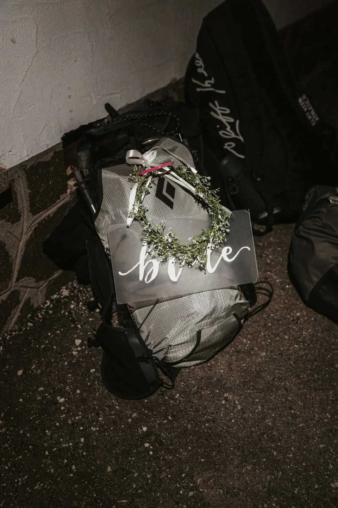
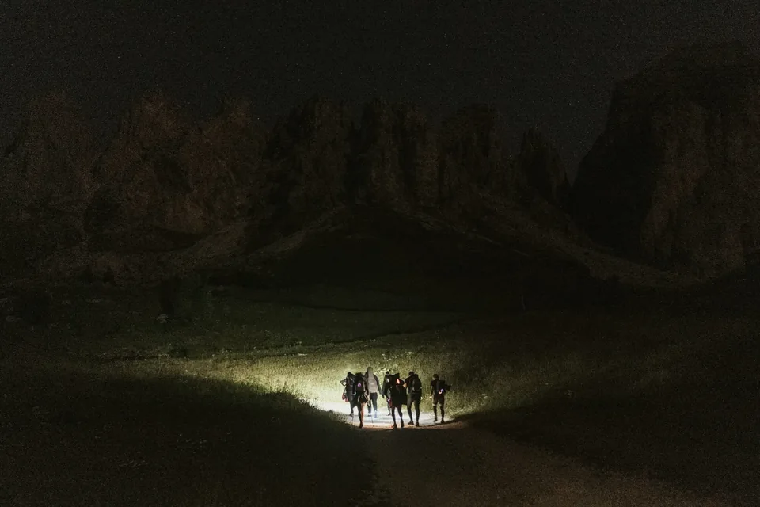
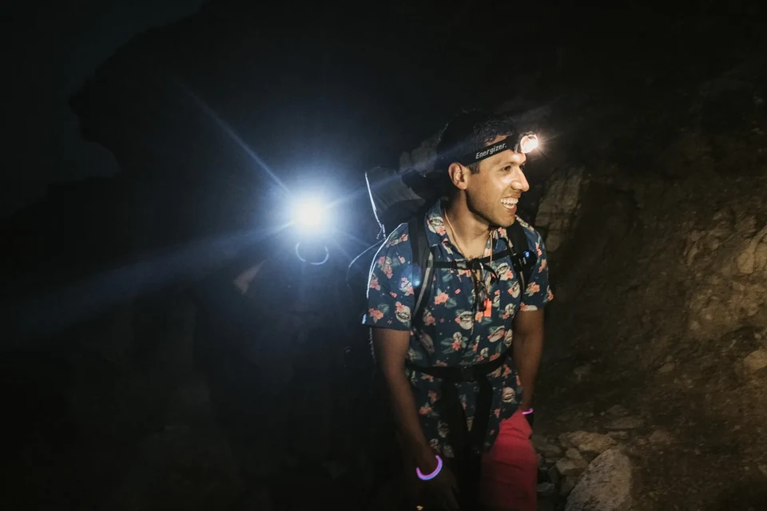
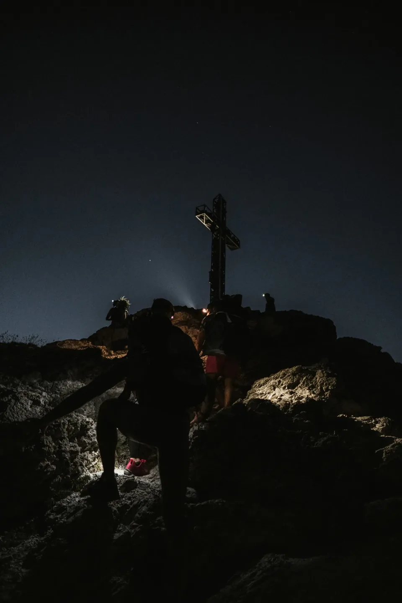
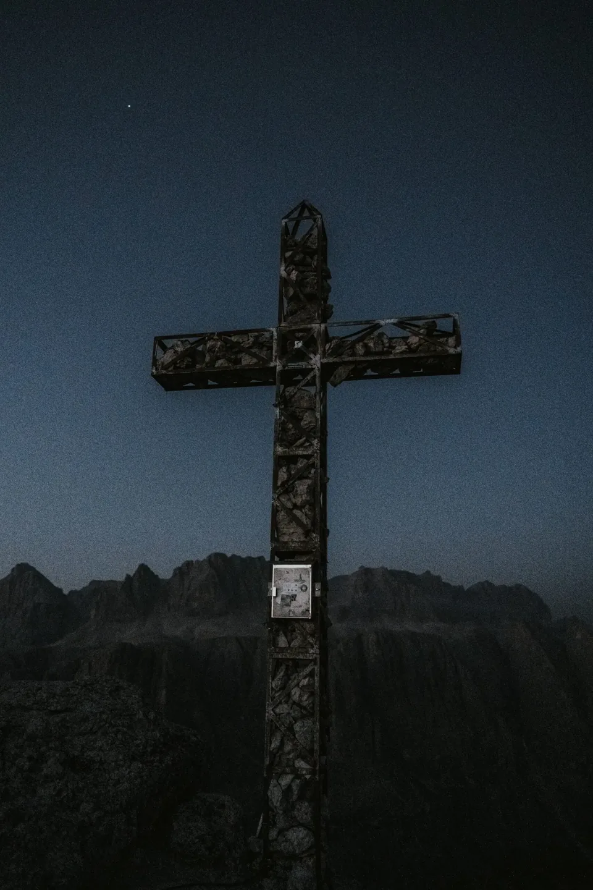
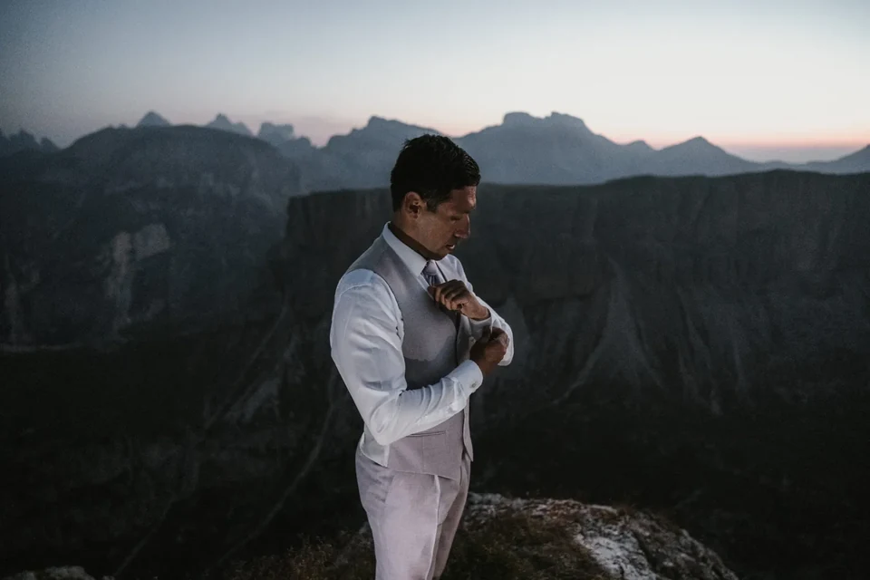
Perded una hora de sueño, quedaos con toda la montaña.
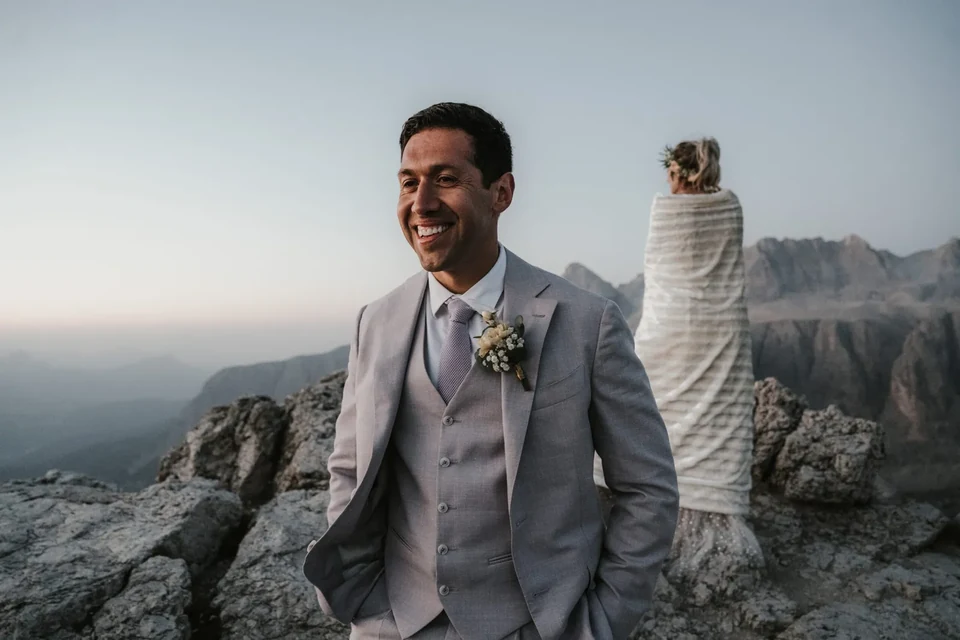
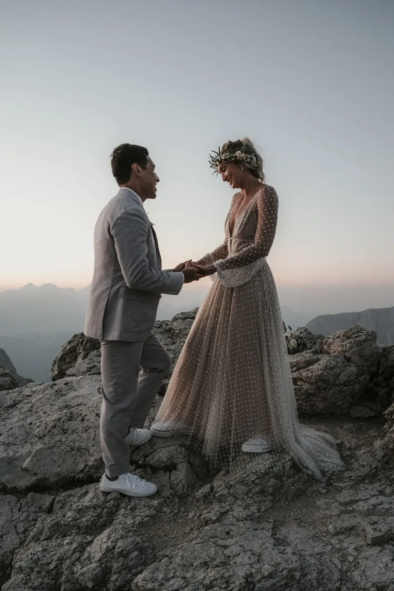
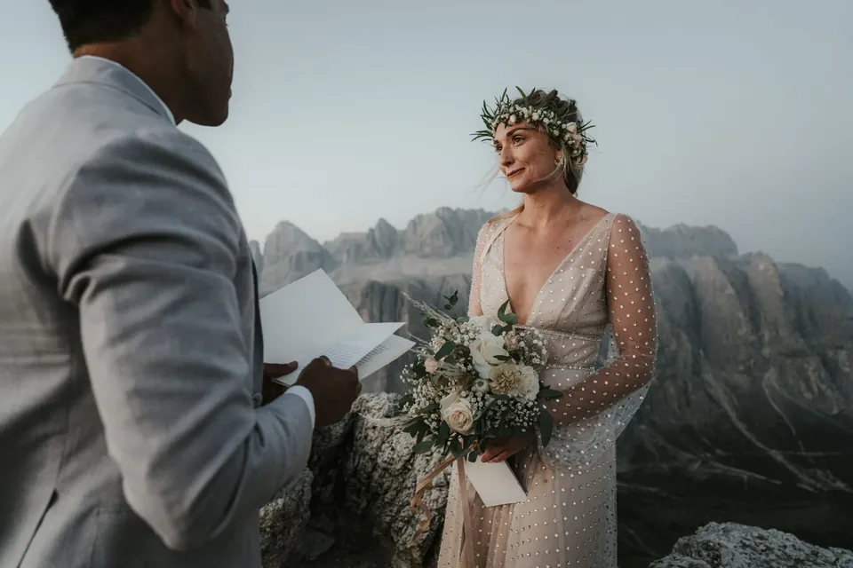
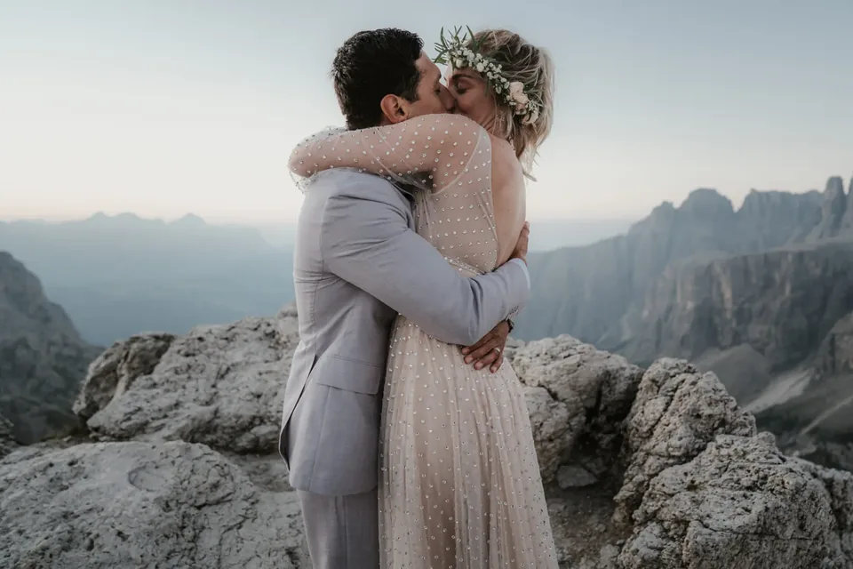

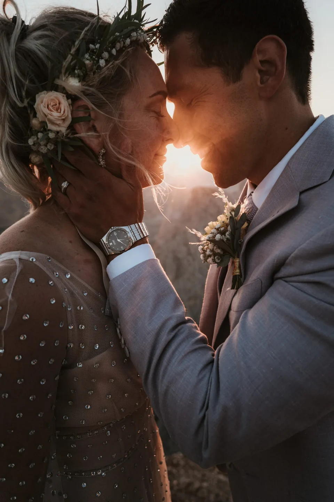
Sea como sea que imaginéis vuestro día — un amanecer tranquilo, una cumbre, un lago para vosotros — lo planificamos en torno a los dos y lo fotografiamos tal como se sintió.
Usamos cookies para estadísticas anónimas (Google Analytics vía Google Tag Manager) para mejorar el sitio. La analítica solo se activa con tu consentimiento. Política de privacidad